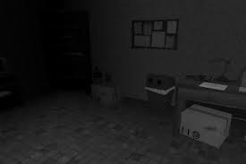

Pequeña historia de terror
Mi hijo me despertó en la madrugada diciéndome,
“Papá, hay un monstruo debajo de mi cama”.
Fui a mirar y no había nada,
entonces
escuché
una voz
temblorosa en el armario, era mi hijo diciendo...
- “Papá... hay un monstruo sobre mi cama”
